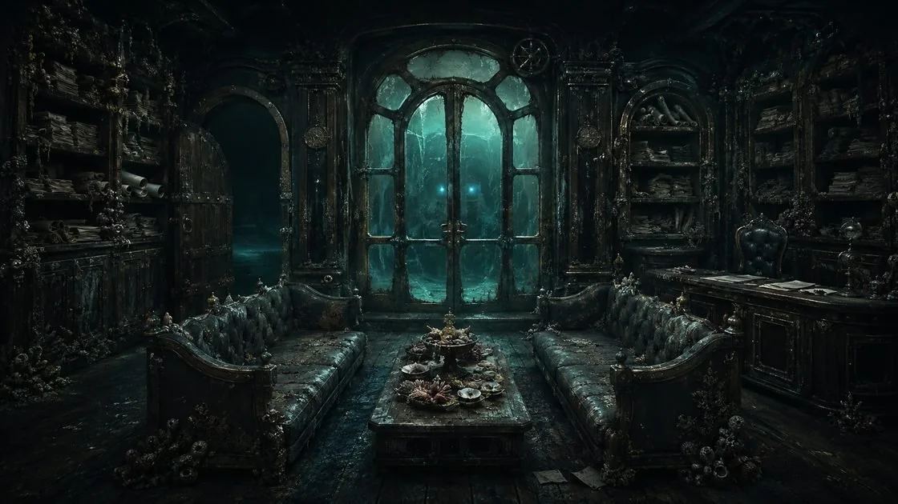

Plomba
Główny rzemień uprzęży spina plomba: woskowa pieczęć z tamtej przesyłki, która przestała być woskiem. Nie topi się, nie kruszy, nie daje się zarysować, ma zawsze tę samą temperaturę — nad ogniem i w lodzie. Odcisk znaku wciąż czytelny, tylko nikt go nie rozpoznaje. Siedzi dokładnie w miejscu, w którym wtedy dociskał ją do ciała. Kiedyś plombowała przesyłkę — teraz plombuje jego.
ta sama co zawsze
otoczenie: pokład
Plomba jest też naczyniem Odbiorcy (Genie's Vessel) i ogniskową zaklęć. „Niezniszczalność” jest czysto narracyjna — nie daje mechaniki, dopóki DM tak nie zdecyduje.
Pakt
Pact Magic — magia z paktu, nie z nauki. Sloty, uniki i lot do odhaczania przy stole; Doręczenie rzuca kości. Stan zapisuje się w tej przeglądarce. Wartości z karty v2.3 — poziom 7 i point buy wciąż do potwierdzenia z DM.
Sloty paktu2 · zawsze 4. poz. · krótki odpoczynek
Hadozee Dodge1k6 + 3 · 3 / długi odpoczynek
Elemental Giftlot 30 ft, 10 min · 3 / długi odp.
Nazwy stołowe obowiązują w grze — manifestacje to warstwa opisowa, mechanika bez zmian. Rozszerzone Marida są zawsze przygotowane; „Chłód Dna” dopiero od 9. poziomu.
Dostawa
Origin story kuriera: paczka, o której nie wiedział, że jest nią samą.
- WPIS 01Był kurierem gildii — specjalistą od przesyłek dziwnych. „Zawieźć i nie pytać” nie było jego wadą, tylko specjalnością; dlatego to zlecenie trafiło właśnie do niego. Nie nosił ładunku bez potrzeby: skoro nic mu nie groziło, paczka leżała w luku, na dnie statku.
- WPIS 02Papierowo wyglądała zwyczajnie nawet w gildii. Dopiero kapitan, czytając mapy tuż przed atakiem, przesunął palcem po pustym morzu: adres wskazywał wyspę z żeglarskich opowieści, której na wodzie nie ma. Bo cel nigdy nie był na powierzchni.
- WPIS 03Macki wyszły bez ostrzeżenia. Pomagał, póki pomoc była tania. Kiedy przestała być tania — pchnął. To nie była decyzja, tylko rachunek policzony szybciej, niż zdążył go pomyśleć.
- WPIS 04Wszyscy rwali w górę, na pokład. On zszedł w dół, pod prąd uciekających, do zalewanego luku — po przesyłkę. Nie dlatego, że była cenna. Dlatego, że była jedyną stałą rzeczą w świecie, który właśnie tracił kształt.
- WPIS 05Statek nie zatonął. Statek został ściągnięty. Miotało nim, zerwało olinowanie i maszty, ale kadłub poszedł pod wodę w całości, a woda nalewała się od góry — nieregularną, szarpaną falą. Gdy sięgnęła gdzieś między pierś a pępek, przycisnął pieczęć do ciała i w naiwnej pewności powiedział sobie, że będzie dobrze, o ile będzie trzymał. Bo przy innych przesyłkach zawsze było.
- WPIS 06Na dnie powstała przestrzeń, w której dało się oddychać. Nie bańka i nie jaskinia — miejsce, w którym woda cofnęła swoje prawa, bo ktoś jej tak kazał.
- WPIS 07Wtedy zrozumiał, że dostawa doszła do skutku. Odbiorca czekał na dole. Pokwitowaniem był pakt. Z ładunkiem faktycznie nic się nie stało — z resztą tak. Wynurzył się z linią wodną na futrze i z plombą, która przestała być woskiem. Rejestr rejsu pozostał na dnie.
Księgowość
Rdzeń: rachunek. Świat to fracht — wszystko ma nadawcę, odbiorcę i koszt przewozu.
Mówię na głos to, co inni myślą — tonem inwentaryzacji. „Dwóch z nas stąd nie wyjdzie. Wolałbym nie być jednym z nich. Bez urazy.”
Zawsze trzymam się czegoś stałego — ręką albo stopą. Raz w życiu trzymanie naprawdę zadziałało.
Rachunek. Każda przysługa ma koszt; pomoc, która nic nie kosztuje, daję odruchowo, resztę przepuszczam przez księgowość. Rachunki muszą się kiedyś zgodzić. (Neutralny)
Gdy stawką jest życie, wybieram swoje i nie udaję, że jest inaczej.
Poznać cenę. Nie chce zerwać paktu — chce się dowiedzieć, ile kosztuje jego własne, wciąż otwarte saldo u Odbiorcy.
Że saldo zostanie ściągnięte w chwili, której nie wybierze — tak jak woda, która nalała się od góry, gdy był pewien, że będzie dobrze.
WIĘŹ · PRYWATNA LISTA DŁUGÓW · F.
Imiona tych, których koszt poniósł ktoś inny. Nie z winy. Z księgowości.
Lista zapisuje się tylko w tej przeglądarce — jak notes w kieszeni kuriera.
„Nieokreślony dług zżera mnie bardziej niż wysoki.”
Odbiorca
Marid, najwynioślejszy z dżinów, występuje tu jako celnik głębin: końcowy adresat wszystkiego, co zabrało morze. Przesyłka doszła, Odbiorca pokwitował — pokwitowaniem był pakt. Patron nie wychodzi; jego głos i obecność idą wyłącznie zza szklanych drzwi gabinetu.
Gdy chodzi o dostawę i dług. Końcowy adresat wszystkiego, co morze zabrało.
Gdy chodzi o rozpatrzenie, katalog, procedurę. Nie wróg — urząd.
Bo miejsce, w którym urzęduje, jest Bezpieczną Przystanią. Kto włada przystanią, jest jej kapitanem.
Prawdziwe imię: nieznane. Patron celowo bez wizerunku — byt nie do zobaczenia. Za taflą widać tylko dwa punkty błękitu.
Bezpieczna Przystań — przedsionek


Przedsionek · dwoje drzwi: otwarta głębia i gabinet za szkłemGościnność bez jej treści. Wszystko tu wygląda na troskę o interesanta, a pod spodem jest czystą procedurą — tak jak Odbiorca udaje rozmówcę, a jest ladą.
- Sekretariat bez sekretarza. Biurko jest, krzesło jest — nikt za nim nie siedzi. A papiery i tak są przełożone od ostatniego razu.
- Dwie kanapy i stolik. Zwrócone ku sobie. Miękkie jak wodne łóżko, tylko gęstsze i sztywniejsze — wyglądają na wygodne, nie są.
- Regały po bokach. Manifesty i konosamenty, za każdym razem odrobinę inaczej posortowane. Ktoś tu pracuje. Nigdy go nie widać.
- Aperitif. Owoce morza zamiast owoców — jadalna wersja sztucznych owoców, które mają po prostu ładnie leżeć, kiedy się czeka. Nie sycą, nie obrzydzają. Po prostu są.
- Zapach. Subtelna stęchlizna, która nie przeszkadza. Ładne, ale jakby wyciągnięte po kilkudziesięciu latach z wody.
Ten przedsionek przy każdej wizycie jest odrobinę inaczej poukładany.
Rachunek otwarty
Pusta szczelina w kolażu. Wśród zakonserwowanych płaszczy jest jedno wolne miejsce — na kurtkę wielkości Fuska. Fusk to widział; „saldo nieznane” ma konkretne miejsce.
Oczy-echo. Fosforyzujący błękit patrona to ten sam odblask, który Fusk ma teraz w oczach — „barwa światła widzianego spod wody”. Pakt zostawił na nim znak.
· rasa Hadozee (Spelljammer AAG) — spoza PHB, wersja po erracie; wymaga zgody DM
· patron The Genie (Marid) — Tasha's; zatwierdzony
· poziom 7 i point buy — do potwierdzenia
· Pact Boon, inwokacje, lista czarów — konfigurowalne
· natura Odbiorcy, wyspa‑legenda, źródło magii paktu — celowo puste; kurier nie zagląda do paczki
· „Yaki”: imię drugie, nieużywane — nie nazwisko
- Karta postaci v2.3Konosament schodzący w głębiny: 14 sekcji, od wyglądu po reference taktyczny.Strona762 KB
- Odbiorca — akta patronaSuplement: tożsamość, ikona, głos zza szkła, Bezpieczna Przystań.Strona192 KB
- Konosament — pierwsza wersjaPortret bez mechaniki.Strona139 KB
- WizerunkiNa dnie · A · B · C · DPNG4,6 MBPNG756 KBPNG2,5 MBPNG2,2 MBPNG2,0 MB